The eight peoples
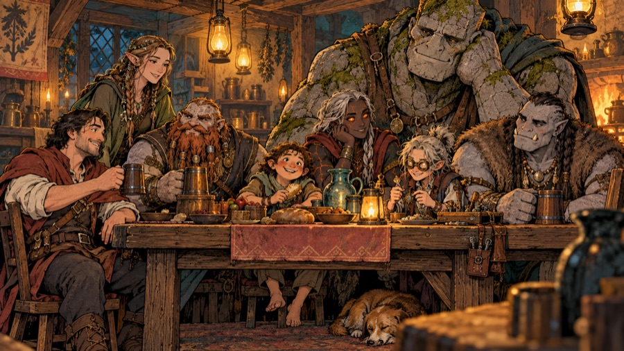
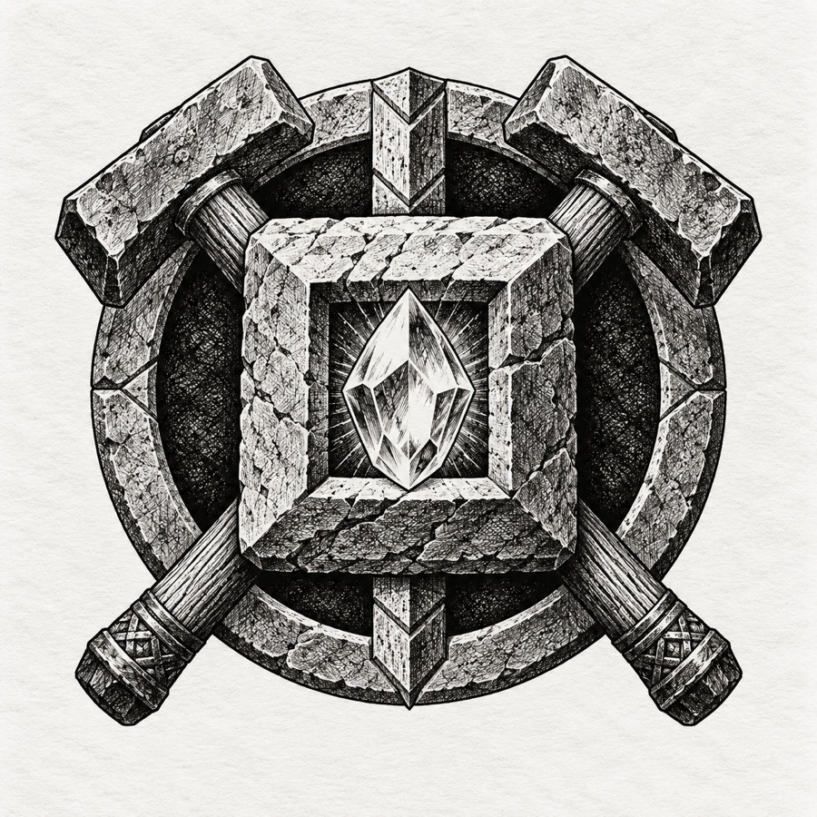
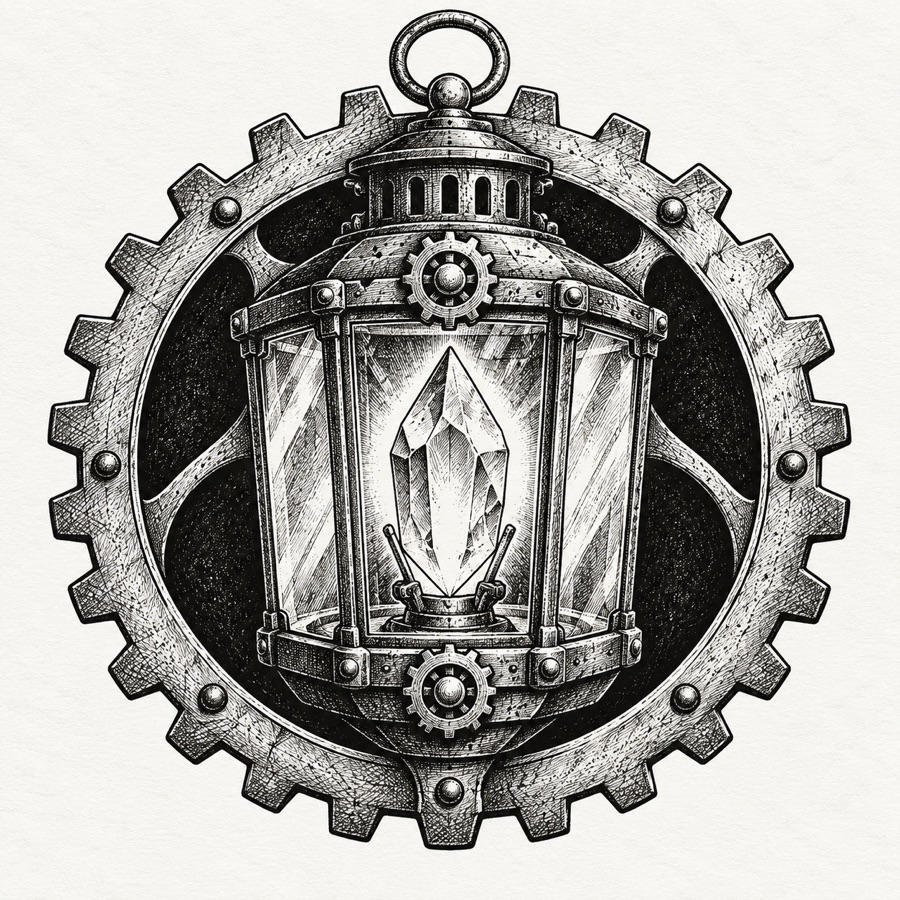
Draft. The game's eight playable peoples, what binds each to the light and the deep, and how they see one another. Stat changes, infravision and gifts in the game are given a reason where one fits.
| People | Homeland | Tie to the light | Tie to the Lampway |
|---|---|---|---|
| Human | The coast and the Tarrow towns | Carried the ember inland | Caedra, the Lamp Kings, Lanternhollow |
| Sylvan | The Greenroof forest | Keep starlight | Starfall, the Root Shrine |
| Stonekin | The Deephalls | Carve the stone that holds light | Dug the upper rings |
| Burrowfolk | Warrens of the Hollowmark | Run messages in the dark | The warren under Lanternhollow |
| Tinkerling | Workshops of the Tarrow towns | Make lamps and devices | Grew the Ring of Glass; the Lantern Guild |
| Ashborn | The edges of the deep fires | Born of the heavy sparks | Kept the Ring of Forges |
| Marrowkin | Nowhere, now | Changed by long watch in the dark | The Marrow Guard of the Ring of Rest |
| Cragborn | The Crag Roots | The first-cooled stone | Hauled the Lampway's stone; giants are their kin |
Humans
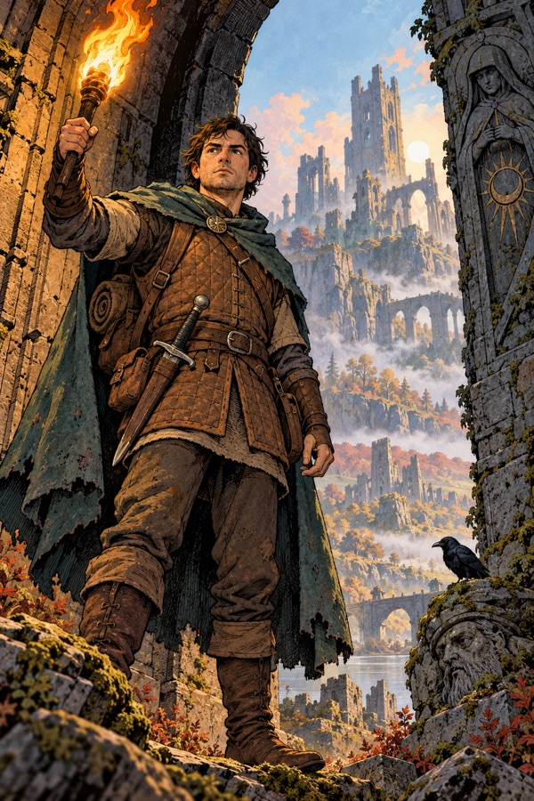
Humans came over the hills from the coast carrying the ember, and that is what they are known for: carrying things further than anyone else would bother to. They have no gift and no failing. They learn fastest (in the game, the smallest experience penalty) because they never stay one thing for long.
Caedra was human, and so was every Lamp King. Humans founded Lanternhollow and still run its council. Other peoples say that humans built the cage and then forgot why, which is unfair and also true.
Sylvan
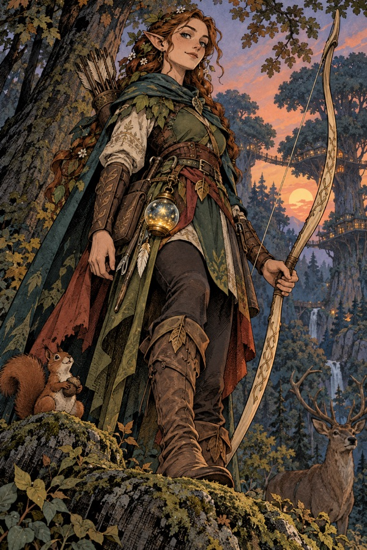
The Sylvan are tall, slender forest folk of the Greenroof, with keen eyes (infravision 30 ft) and quiet feet. They believe they were born where starlight fell thickest, and they keep it: in their high groves, glass bowls catch starlight at night and are carried down into the roots by day. That is the root of their talent for arcane magic and for the bow (bonuses to Intellect, Wisdom, Dexterity and Charisma; a little frail).
They had no part in digging the Lampway and are faintly offended by it, but the Root Shrine in the Ring of Roots lies under their forest, and a Sylvan archer, Ithrel Silverstring, made Starfall. By an old promise, every generation of Sylvan sends archers to stand watch over Lanternhollow.
Stonekin
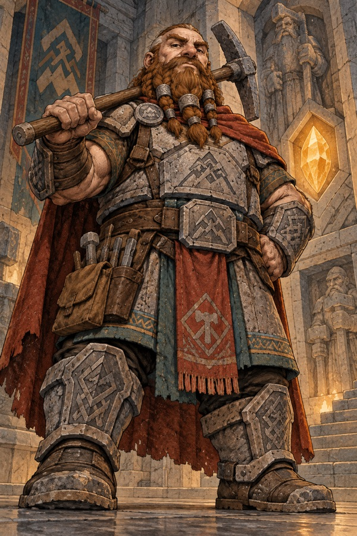
Broad, stubborn people of the Deephalls, east of the Hollowmark. They see heat in the dark (infravision 50 ft, the best of any people), they are tough and strong-willed, and they are not graceful and do not care (Strength, Wisdom and Constitution up; Dexterity and Charisma down).
The Deephall clans cut the Lampway's upper rings under contract with the first Keepers, and every Stonekin child learns which clan cut which hall. They believe stone that has held light for long enough becomes holy, which is why they were horrified when human miners started cutting glow crystals out of the shrine walls. Most Stonekin in Lanternhollow came back during the Glow Rush to stop the cutting, and stayed to sell armour (Bram Ironside's family among them). The Stonehelm of the Deep Halls is a Stonekin thane's helm.
Burrowfolk
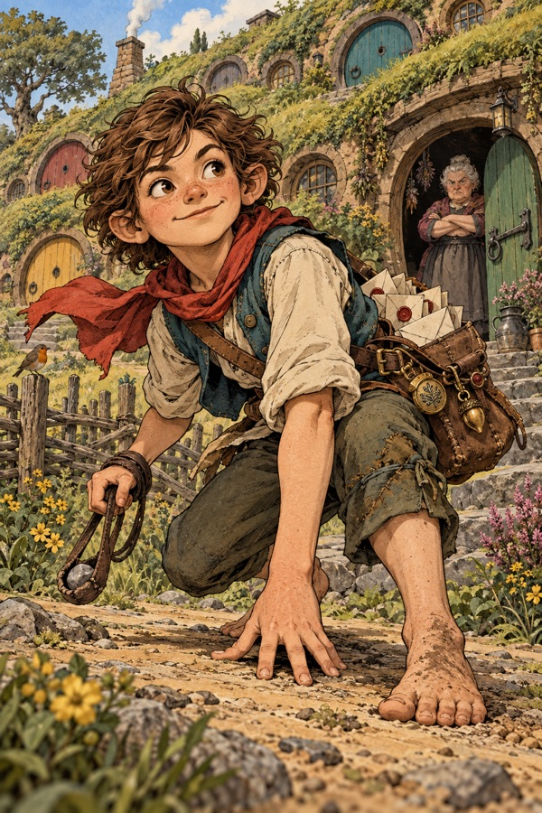
Small, nimble and hard to notice (Dexterity up most of all; Strength down; superb at sneaking and with slings). The Burrowfolk live in warrens all over the Hollowmark's hills and in a great warren under Lanternhollow itself. They are a people of messengers: in the old kingdom, Burrowfolk runners carried word between the rings faster than any lamplighter, through passages no one else could fit.
Their warrens are run by grandmothers, and their highest compliment is "you'd make a good runner". Odda the Provisioner is a Burrowfolk grandmother of the warren under the town. They see well in the dark (infravision 40 ft), and they have a saying: "Light is for finding things. Dark is for not being found."
Tinkerlings
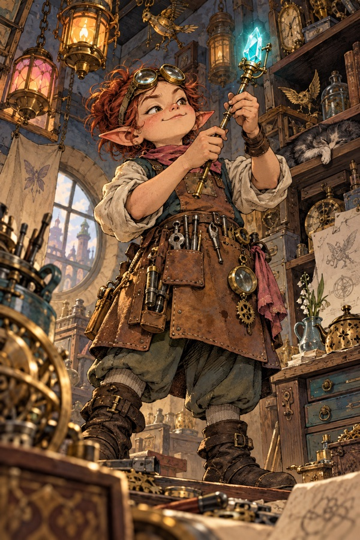
Clever little makers who can coax any wand or gadget into working and pick most locks (Intellect and Dexterity up; the best at magic devices and disarming). They came up the Tarrow from the coast towns as glassmakers and clockmakers.
Tinkerling glassmakers grew the crystal walls of the Ring of Glass, with the first Arcanists, and they have never quite forgiven themselves that it was their ring that failed first. In the Years of the Hollow they founded the Lantern Guild, which cut glow crystals into lamps, and the banking house of Brassle & Vane, which built Ironjaw. Thorne Vialkeeper the alchemist is a Tinkerling, and so (probably) is Maelis of the Blue Door.
Ashborn
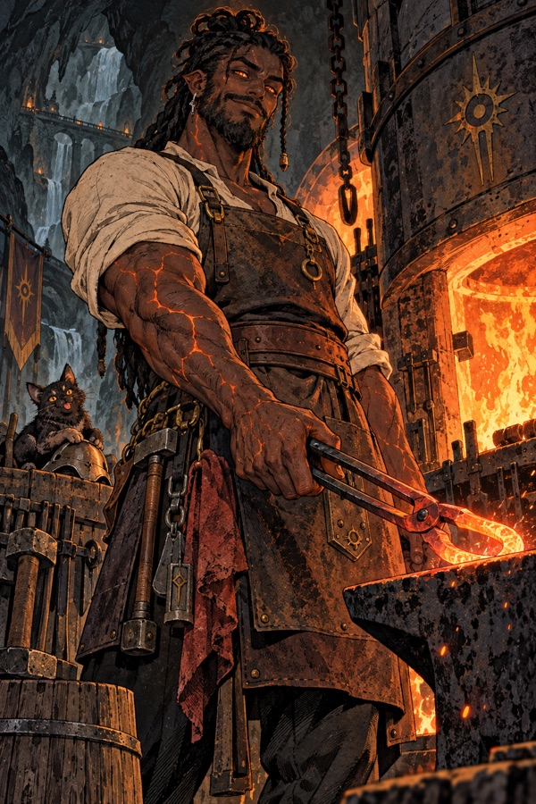
Born at the edges of the deep fires, with ember-coloured eyes and skin that remembers heat (they resist fire: burns hurt them far less; Strength, Intellect and Constitution up, Wisdom and Charisma down). The Ashborn believe that they are children of the heavy sparks that sank into the earth at the Bursting, and that the First Fire was a woman who is still alive. Some say she is the Ember Queen. Most Ashborn would rather not talk about that.
Under the Pact of the Forge the Ashborn kept the Ring of Forges burning as a wall of light for more than a thousand years, and their smiths forged the Keepers' weapons, Embersong among them. When Aurenhold fell and the Oil Tithe ended, they left the Ring of Forges and came up into the world, where they have never felt at home. Many delve to get back to the forges they think of as theirs.
Marrowkin
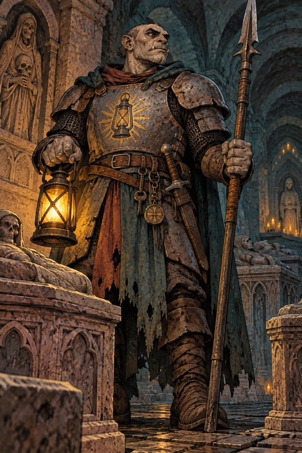
Rough, tusked brawlers, unwelcome in most towns but welcome in any fight (Strength and Constitution up; Intellect, Wisdom and Charisma well down). The Marrowkin are the descendants of the Marrow Guard: soldiers of Aurenhold who stood watch in the Ring of Rest among the dead kings, a lifetime at a time, from about 1300 BH. Long generations in the dark beside the dead changed them, giving them tusks, thick bones, night eyes (infravision 30 ft) and an unnerving calm around corpses.
When Aurenhold fell, the Marrow Guard was blamed for failing to save the king, and its families were driven out of every town. Many Marrowkin still believe they are oathbound to guard the crypts and go down to finish the watch. The goblins and kobolds of the Deep are not their kin, whatever townsfolk say, and calling a Marrowkin a goblin is a good way to lose teeth.
Cragborn
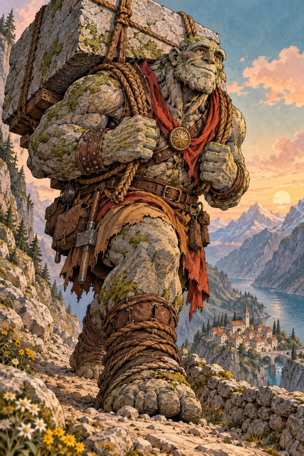
Huge, slow-witted giants of the mountain roots (the most Strength and Constitution of any people; Intellect, Dexterity and Charisma far down; they hit hardest and heal fast). The Cragborn say they are the first-cooled stone of the world, made before the stars were hung, and they think slowly because stone does.
Cragborn haulers carried the Lampway's stone out for the Keepers. Some of their cousins went down with the digging and never came back up. Those are the giants of the Deep: hill giants first, then frost, fire and storm giants as they went deeper and took on the nature of each ring, and the deep titan at the bottom. A Cragborn who meets a giant in the Deep may be meeting family, and that is the saddest thing in Cragborn songs. Rimeheart is a Cragborn name.
How the peoples see each other
- Humans think everyone else is old-fashioned; everyone else thinks humans are in a hurry.
- Stonekin and Tinkerlings argue about the glow crystals: holy stone against useful stone.
- The Sylvan pity the Cragborn's giant cousins and fear them a little.
- The Ashborn and the Marrowkin share an outcast's understanding: both were kept to a duty in the deep and then thrown out when the kingdom fell.
- The Burrowfolk know everyone's secrets and sell some of them.